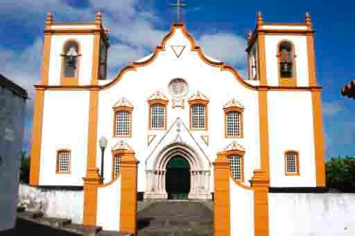

Francisco Pereira da Silva “o pai”
1864
Freguesia das Ribeiras – Lajes do Pico
Ilha do Pico, Açores
A ilha do Pico é constituída por três concelhos.
A Freguesia das Ribeiras se situa no Conselho de Lajes do Pico.
Fonte: http://noveilhas.no.sapo.pt/Pico_Files/M_Pico.jpg
Foi nesta freguesia que nasceu Francisco Pereira da Silva “o pai” em 19 de abril de 1784, filho de João Pereira da Silva e Isabel de Jesus. Em sua certidão de batismo o nome de seu pai aparece como Pereira da Silveira.
Foi batizado em 26 de abril de 1784 na Paróquia de Santa Barbara, sendo seus padrinhos Francisco Vieira da Roza e sua irmã Maria Isabel.
Inventário Genealógico do Centro de Conhecimento dos Açores / Portal Cultura Açores
Registro de Batismo de Francisco Pereira da Silva
“Franco fo de João Pra da Sylvra e de sua mulher Izabel de Jesus nas e mores desta frga das Ribras nasceo aos dezenove dias do mês de Abril do anno de mil sete sentos e outenta e quatro e foi baptizado por mim o Vigro desta Igrja de Sta Barba abaixo assignado em os vinte e seis dias do dito mês e ano forão padrinhos Franco Vra da Roza e sua Irmã Ma Izabel todos mores do Campo de Cima desta dita frga...”
Paróquia de Santa Barbara das Ribeiras.
Fonte: Ribeiras Online
A antiga Paróquia de Santa Bárbara das Ribeiras, construída em 1676, foi demolida e em seu lugar uma nova Igreja com maiores proporções foi construída.
Os Pais
João Pereira |
| Nascimento: 16/10/1753 Ribeiras – Lajes do Pico – Ilha do Pico |
| Batismo: 21/05/1753 – Paroquia de Santa Bárbara – Ribeiras – Lajes do Pico – Ilha do Pico |
| Padrinhos: Antonio Silveira (filho de Manoel Silveira Rodrigues ) e Anna Bernarda (filha de Manoel Ferreira Rodrigues e Vicencia Silveira) |
| Filiação: Manuel Pereira da Silva e Luzia Silveira |
| Casamento: 03/11/1777 Paroquia de Santa Barbara Ribeiras – Lajes do Pico – Ilha do Pico |
| Falecimento: 10/1820 Praia da Vitoria - Ilha Terceira |
Casamento com
Isabel de Jesus |
| Nascimento: 22/12/1760 Ribeiras – Lajes do Pico – Ilha do Pico |
| Batismo: 29/12/1760 – Paroquia de Santa Barbara Ribeiras – Lajes do Pico – Ilha do Pico |
| Padrinhos: |
| Filiação: Manuel Vieira e Catherina da Conceição |
| Casamento: 03/11/1777 |
| Falecimento: 22/10/1830 Praia da Vitoria - Ilha Terceira |
| Obs: Na certidão de batismo sua mãe aparece como Catherina Silveira |
João Pereira da Silva e Isabel de Jesus tiveram 09 filho, que poderá ser visto nos arquivos das famílias
No Centro de cultura Interdisciplinar Cultura Espaço e Memória – Grupo de História das Populações (NEPS – Genealogia) da Universidade do Minho há a árvore genealógica incompleta dos pais do João Pereira da Silva e menção que seu pai Manuel Pereira da Silva nasceu em 04/05/1704, porém para podermos confirmar que é mesmo o pai de João Pereira precisaríamos da certidão de seu casamento com Luzia Silveira e infelizmente os livros de casamentos entre os anos 1720-1763 estão perdidos.
1840
O Casamento
O concelho e Freguesia da Villa da Praia – Ilha Terceira
A Ilha terceira é formada por dois Concelhos: Angra do Heroísmo e Vila da Praia.
Fonte: http://www.oocities.org/br/miguelbmeneses/freguesias/freguesias.html
E foi no Conselho da Vila da Praia e Freguesia de Santa Cruz da Vila da Praia na Ilha Terceira que Francisco Pereira da Silva se casou com Mariana Josefa em ...
Fonte: http://actd.iict.pt/eserv/actd:AHUD5944/preview_n4497.jpg
...25 de Outubro de 1840

Inventário Genealógico do Centro de Conhecimento dos Açores / Portal Cultura Açores
Registro de Casamento de Francisco Pereira da Silva e Marianna Josefa
Em os vinte e sinco dias do mês de Outubro de mil outo centos e quarenta sendo de manha nes Matriz de Santa Cruz da Villa da Praia da Vitoria (?) os proclamas Tridentinos sem obter impedimento algum como me constou de hum alvará Matrimonial expedido da Ouvidoria Eclesiastica deste districto (?) Vigario (?) desta da Matriz abacho assignado e das testemunhas solemnemente presentes Francisco Caetano de Barulhos morador na Serra e Francisco Gomes das Pedreiras todos desta freguesia se casaram solemnemente por palavras de presente por marido e mulher como manda a S. Me. Igreja Francisco Pereira da Silva, viúvo de Anna Vicencia, com Marianna Josefa fa de Manoel Gomes, já defunto, e de sua mulher Maria Josefa baptizada na Parochial do Archanjo S. Miguel do Lugar das Lajens e fregueses desta da Matriz onde ambos os contrahentes os preceitos Parchiais as tres ultimas Quaresmas e logo lhes dei as bençãos conforme os Rittos Euos e para que conste já (?) este termo que assigno com as das testemunhas a rogo de quem por nam saberem assignou Nato d´Almda Drummonde e a rogo dos contrahentes por não saberem assignou Jose Joaquim da Luz todos desta frga para que conste faso este ter no dia mês e anno assima dto ...
Paroquia de Santa Cruz da Vila da Vitoria

Fonte: http://pt.wikipedia.org/wiki/Igreja_de_Santa_Cruz_%28Praia_da_Vit%C3%B3ria%29
Francisco era viúvo de Anna Vicencia com quem havia se casado em 27/09/1807 na Paroquia Santa Catarina Freguesia do Cabo da Praia - Ilha Terceira e tiveram descendência.
Os Filhos
Francisco e Mariana tiveram três filhos nascidos na Praia da Vitoria:
Maria |
| Nascimento: 22/01/1842 Praia da Vitoria - Ilha Terceira |
| Batismo: |
| Padrinhos: Francisco Gomes e sua enteada Maria Theodora |
| Falecimento: 04/03/1842 Praia da Vitoria - Ilha Terceira |
Francisco Pereira da Silva |
| Nascimento: 29/05/1843 Praia da Vitoria - Ilha Terceira |
| Batismo: 04 de junho – Paroquia de Santa Cruz |
| Padrinhos: Joaquim Jose Gonçalves e Maria Isabel |
| Casamento: 03/04/1875 Igreja do Santíssimo Sacramento com Leopoldina Pereira da Rocha (*Rio de Janeiro 08/05/1853-+22/09/1938), filha de Vicente Pereira da Rocha e Balbina Joaquina da Rocha |
| Falecimento: 30/10/1900 Rio de Janeiro |
| Profissão: Charuteiro – Charutaria Silva & Pinna juntamente com João Francisco de Pinna |
| Imigração: 1856 – aos 13 anos juntamente com seu irmão José |
José Pereira da Silva |
| Nascimento: 09/05/1845 Praia da Vitoria - Ilha Terceira |
| Batismo: 18/05/1845 |
| Padrinhos: Joaquim Jose Gonçalves |
| Casamento: |
| Falecimento: |
| Imigração: 1856 – aos 13 anos juntamente com seu irmão |
O Falecimento
Francisco Pereira da Silva “o pai”
Inventário Genealógico do Centro de Conhecimento dos Açores / Portal Cultura Açores
Registro de Óbito de Francisco Pereira da Silva
Em vinte e nove dias do mês de Septembro de mil outo centos sincoenta e hum faleceu com todos os sacramentos Francisco Pra da Silva casado com segunda mulher Marianna Josefa fez testamento foi acompanhado com o clero desta Villa da Praia da Victoria onde era morador, tendo septenta annos de idade poco mais ou menos jas sepultado no Cemiterio Geral desta dita Villa e para que conste faço este termo que assigno no mesmo dia, mês e anno supra...